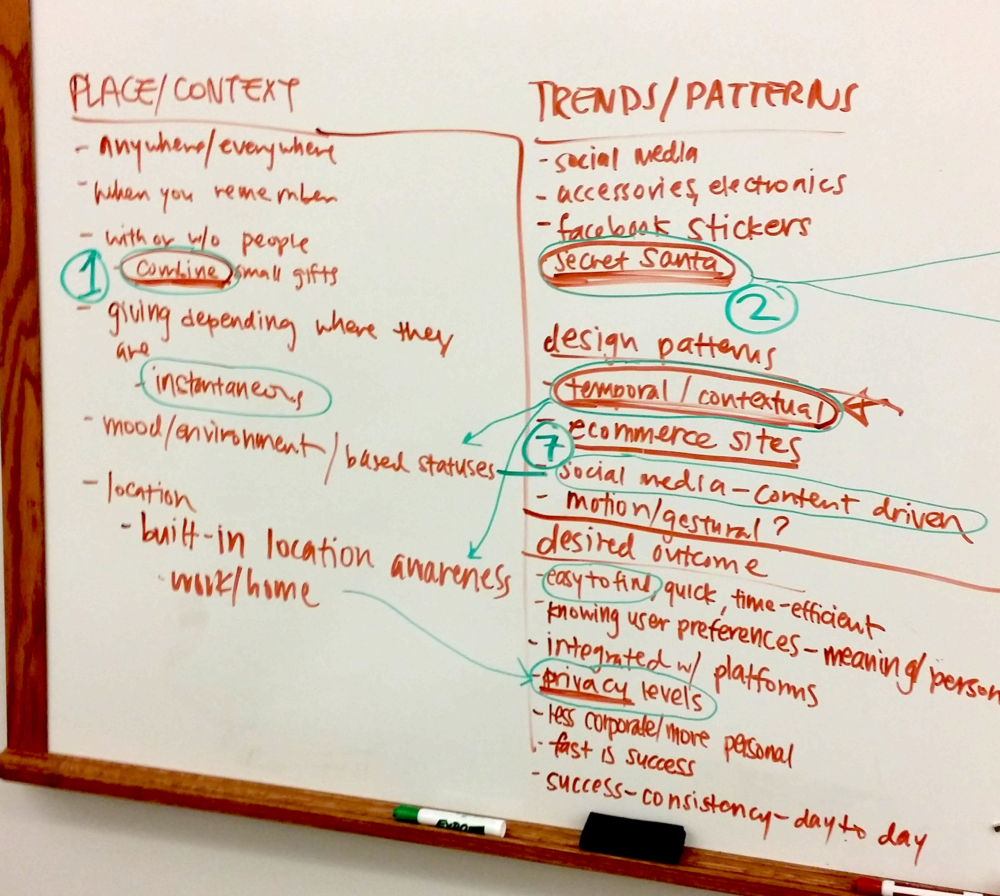
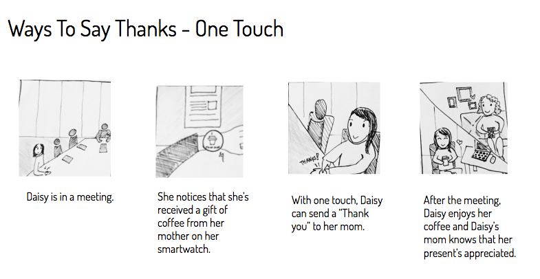
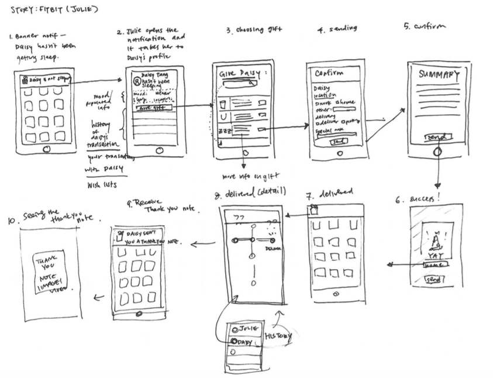
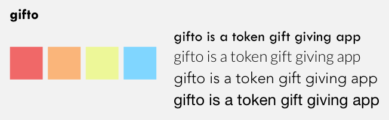
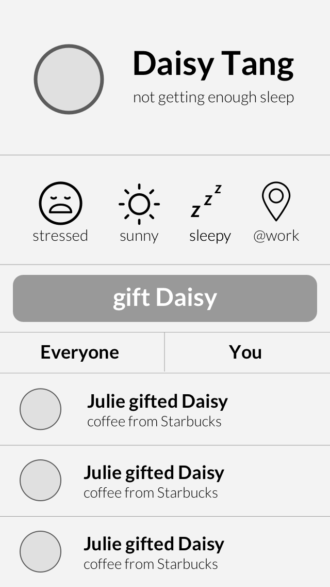
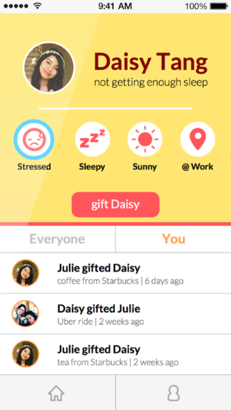
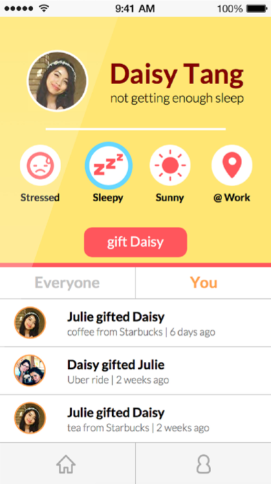
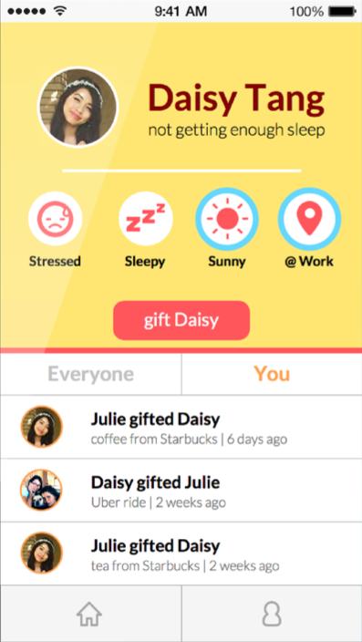
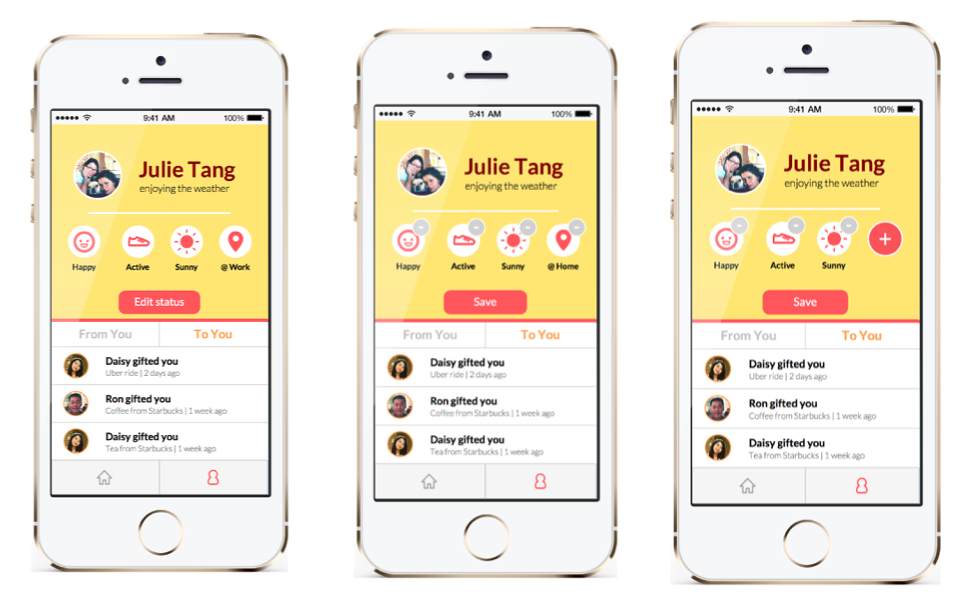

GIFTO
Role: UX/UI
Design Tools: Sketch, Illustrator, Photoshop, Keynote, InVision
Research Methods: Ecosystem Collection, Storyboarding
Duration: Oct 2015 - Nov 2015 (4 weeks)
Team Members: Raghav Anand, Nana Choi, Jaewon Kim
Prototype Links: Giving, Receiving
How do we let the people who we care about, who are both far away and close by, let them know that we’re thinking about them? The space of online gift-giving can seem distant and impersonal, but with the introduction of new technologies that are specifically available to phones, our team wanted to find a mobile solution that could utilize these existing capabilities to enhance the gift-giving experience.
Ecosystem Collection
To kickstart brainstorming, the team first created an ecosystem collection of various factors surrounding the culture, economic, and social connotations of gift-giving. We found common ideas among all of our diagrams, including an emphasis on instantaneous interactions (1) and contextual gifts that are based on social media (7).
Storyboarding
After iterating through several ideas, our team decided to center a new mobile experience of gift-giving on contextual factors that impacted people on a day to day basis. Ideas for such contextual indicators included weather, stress levels/sleep levels, location, and activity. We explored use cases through two personas, and developed multiple scenarios in which these personas interacted with the app.
Mobile Flow Map
Visual Design
Once we designed the overall experience, it was time to define the visual design of the app. We explored the visual colors, trying to find a combination that would communicate a modern, fun color palette. To ensure that these colors worked in various lighting and screens, particularly yellow, we tested through InVision on our phones for readability.
Prototyping
The intent of the user experience design was to encourage spontaneity that reacted to the change of these contextual indicators. In wireframing and developing the flow of the usage of the app, we based it gift-giving off notifications, where gifters could receive important status updates about their friends and family and receive a list of recommended gifts.
   From left to right: initial medium-fi screen, contextual data pulled from sentient analysis from social media, health wearables, and weather/location tracking.
Prototype Links: Giving, Receiving
Stakeholder Presentation
In preparation to present our final prototype and flow, we created a presentation to highlight key aspects of our product. One crucial consideration that we incorporated into the presentation, after primative user testing and feedback, was the aspect of privacy and security. Because our app pulled so much personal data from various sources, we wanted to give user control over what their friends could see and not see, and focused a portion of the presentation to emphasize this user control.
Takeaways
In designing a mobile application from idea to polished prototype, one of my main takeways was to consider the environment and surroundings in which the app would be used. While the concept itself focuses on the contextual learning of the user's environment to make the best gift-giving suggestions, every part of the process needed to emphasize the context and environment. When developing the user experience, we honed in our personas' environments, and created storyboards in the context which they would be used, such as exploration for smartwatch wear opportunities.